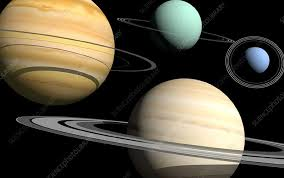
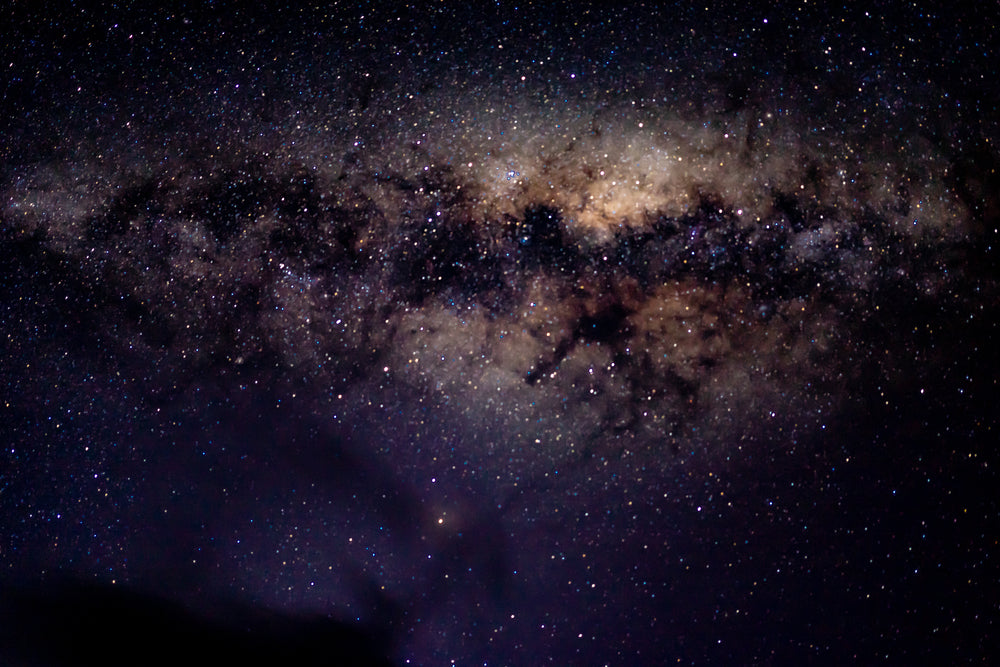

Planets

There are eight planets in our solar system, each unique in its own way.Stars
 Stars are massive celestial bodies that produce
light and heat. Our sun is the closest star to Earth.
Stars are massive celestial bodies made of gas that emit light and heat.
Stars are massive celestial bodies that produce
light and heat. Our sun is the closest star to Earth.
Stars are massive celestial bodies made of gas that emit light and heat.
Galaxies

A galaxy is a system of stars, stellar remnants, interstellar gas, dust, and dark matter bound together by gravity.